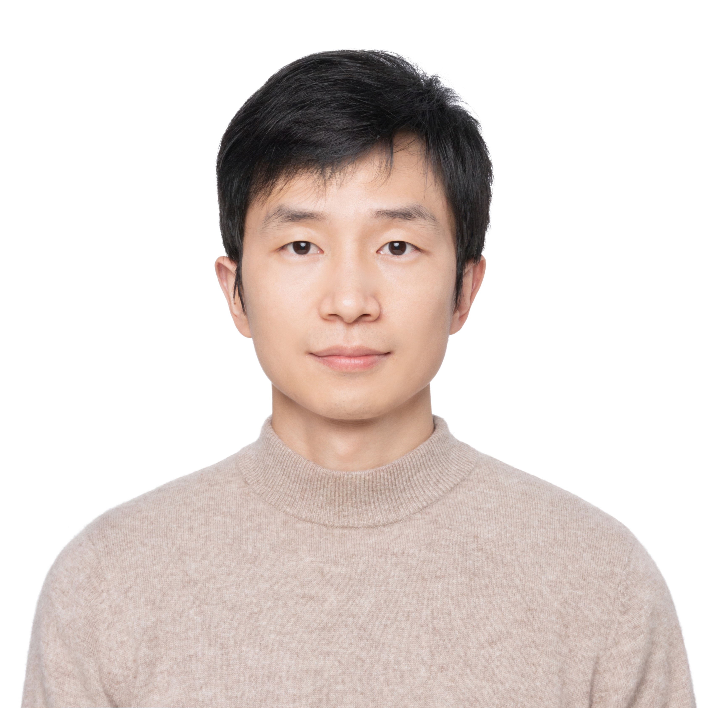

Yahui Liu
Kuaishou Technology

About Me
Yahui Liu is now a Researcher in Kuaishou Technology.
He got his certificate of Doctor Degree from the Multimedia and Human Understanding Group (MHUG)
at the Department of Information Engineering and Computer Science of the University of Trento, Italy, supervised by Prof. Nicu Sebe and Dr. Bruno Lepri , in 2022.
He passed his PhD thesis defense (committee: Vittorio Murino , Zhengyou Zhang , Elisa Ricci ).
Before that, he received B.Eng. degree in Photogrammetry and Remote Sensing and M.Eng. degree in Pattern Recognition and Intelligent System from Wuhan University in 2015 and 2018, respectively.
His research interests lie in the areas of Computer Vision and Natural Language Processing.
Recently, he has been working on MLLMs , Formal Theorem Proving and Agents . We are recruiting daily interns for a long term. Welcome to submit your resume to my email.
Research Experience
Kuaishou , Beijing, China. 01/2025 -- Now Huawei , Shenzhen, China. 08/2022 -- 01/2025 Tencent AI Lab , Shenzhen, China. 2021 -- 2022/06 Linchao Bao and Dr. Wei Bi . FBK and MHUG , Trento, Italy. 12/2018 -- 06/2022 Nicu Sebe and Dr. Bruno Lepri . Tencent AI Lab , Shenzhen, China. 11/2017 -- 09/2018 Wei Bi and Dr. Xiaojiang Liu .Computer Vision and Remote Sensing (CVRS ) Lab, Wuhan, China. 03/2015 -- 06/2018Jian Yao .
News
6/2025: We released SeqPE for universal positional encoding.
5/2025: We released LCoT2Tree for uncovering structural patterns in Long CoT.
5/2025: We released CrEval for evaluating text creativity across diverse domains.
5/2025: We released a UNITE framework for Multimodal Information Retrieval.
5/2025: One paper accepted to ACL main conference, MCTS-VCB .
4/2025: We released Capybara-VL and Capybara-Omni at ICLR 2025 SCI-FM workshop, our efficient MLLMs.
4/2025: We released Leanabell-Prover achieving the SOTA 59.8% pass@32 on MiniF2F-test.
12/2024: One paper was accepted to ICASSP.
7/2024: One paper was accepted to Machine Learning.
2/2023: One paper was accepted to CVPR.
12/2022: One paper was accepted to PRL.
8/2022: Started my journey in Huawei.
5/2022: Passed my PhD Thesis defense!
✦ Conference
Evaluating Multimodal Large Language Models on Video Captioning via Monte Carlo Tree Search Yahui Liu , Fanheng Kong, Chenxi Sun, Jingyuan Zhang, Hongzhi Zhang, V. W., Fuzheng Zhang, Deyi Xiong.To be appeared the Annual Meeting of the Association for Computational Linguistics (ACL ), 2025.arXiv Code
Masked Jigsaw Puzzle: A Versatile Position Embedding for Vision Transformers Yahui Liu *, Yue Song, Wei Bi, Rita Cucchiara, Nicu Sebe and Wei Wang.Appeared in IEEE/CVF Conference on Computer Vision and Pattern Recognition (CVPR ), 2023.Paper arXiv Code
Efficient Training of Visual Transformers with Small Datasets Yahui Liu , Enver Sangineto, Wei Bi, Nicu Sebe, Bruno Lepri, Marco De Nadai.Advances in Neural Information Processing Systems (NeurIPS ), 2021.Paper arXiv Poster & Poster Code
Smoothing the Disentangled Latent Style Space for Unsupervised Image-to-Image Translation Yahui Liu , Enver Sangineto, Yajing Chen, Linchao Bao, Haoxian Zhang, Nicu Sebe, Bruno Lepri, Wei Wang, Marco De Nadai. Appeared in IEEE/CVF Conference on Computer Vision and Pattern Recognition (CVPR ), 2021. Paper Supplementary Video Code
Describe What to Change: A Text-guided Unsupervised Image-to-Image Translation Approach Yahui Liu , Marco De Nadai, Deng Cai, Huayang Li, Xavier Alameda-Pineda, Nicu Sebe, and Bruno Lepri. Appeared in ACM International Conference on Multimedia (ACM MM ), 2020. Paper arXiv Code
Retrieval Guided Unsupervised Multi-domain Image-to-Image Translation Yahui Liu *, Marco De Nadai, Dimosthenis Karatzas, Nicu Sebe, and Bruno Lepri. Appeared in ACM International Conference on Multimedia (ACM MM ), 2020. Paper arXiv Code
Gesture-to-Gesture Translation in the Wild via Category-Independent Conditional Maps Yahui Liu , Marco De Nadai, Gloria Zen, Nicu Sebe, and Bruno Lepri. Appeared in ACM International Conference on Multimedia (ACM MM ), 2019. Paper arXiv Code & dataset
Towards Less Generic Responses in Neural Conversation Models: A Statistical Re-weighting Method Yahui Liu , Victoria Bi, Jun Gao, Xiaojiang Liu, Jian Yao, and Shuming Shi. Appeared in Conference on Empirical Methods in Natural Language Processing (EMNLP ), 2018. Paper Code & dataset
✦ Journal
Spatial Entropy as An Inductive Bias for Vision Transformers Yahui Liu , Marco De Nadai, Wei Bi, Bruno Lepri, Nicu Sebe. Machine Learning , 2024. (Impact factor: 5.8). Paper arXiv Code
Jigsaw-ViT: Learning Jigsaw Puzzles in Vision Transformer Yahui Liu , Qinghua Tao, Johan AK Suykens. Pattern Recognition Letters (PRL ), 2022. (Impact factor: 3.9). Paper arXiv Code
ISF-GAN: An Implicit Style Function for High-Resolution Image-to-Image Translation Yahui Liu , Yajing Chen, Linchao Bao, Nicu Sebe, Bruno Lepri, Marco De Nadai. IEEE Transactions on Multimedia (TMM ), 2022. (Impact factor: 8.4). Paper arXiv Code
Adversarial Shape Learning for Building Extraction in VHR Remote Sensing Images Yahui Liu , Yilei Shi, Lorenzo Bruzzone. IEEE Transactions on Image Processing (TIP ), Volume: 31, Pages: 678-690, 2021. (Impact factor: 10.86) Paper arXiv
Multi-Oriented and Scale-Invariant License Plate Detection Based on Convolutional Neural Networks Yahui Liu . Sensors , Volume: 19, Issue: 5, Page(s): 1175, 2019. (Impact factor: 3.576). Paper
DeepCrack: A Deep Hierarchical Feature Learning Architecture for Crack Segmentation Yahui Liu , Jian Yao, Rengping Xie, and Li Li. Neurocomputing , Volume: 338, Page(s): 139-153, 2019. (Impact factor: 5.5). Paper Code & dataset
RoadNet: Learning to Comprehensively Analyze Road Networks in Complex Urban Scenes From High-Resolution Remotely Sensed Images Yahui Liu , Jian Yao, Xiaohu Lu, Menghan Xia, Xingbo Wang, and Yuan Liu. TGRS ), Volume: 57, Issue: 4, Page(s): 2043-2056, 2019. (Impact factor: 7.5). Paper Code & dataset
Automatic Multi-image Stitching for Concrete Bridge Inspection by Combining Point and Line Features Yahui Liu , Menghan Xia, and Qifei Zeng. Automation in Construction , Volume: 90, Page(s): 265-280, 2018. (Impact factor: 9.6). Paper
Optimal Seamline Detection for Orthoimage Mosaicking by Combining Deep Convolutional Neural Network and Graph Cuts Yahui Liu , Wei Yuan, Shuzhu Shi, and Shenggu Yuan. Remote Sensing , Volume: 9, Page(s): 701, 2017. (Impact factor: 4.2). Paper
Academic Services
Conference Review:
The Forty-Second International Conference on Machine Learning (ICML 2025 )
The Association for the Advancement of Artificial Intelligence (AAAI 2025 )
The 31th ACM International Conference on Multimedia (ACM MM 2024 )
IEEE/CVF Conference on Computer Vision and Pattern Recognition (CVPR 2024 )
Thirty-seventh Conference on Neural Information Processing Systems (NeurIPS 2024 )
The 31th ACM International Conference on Multimedia (ACM MM 2023 )
IEEE/CVF Conference on Computer Vision and Pattern Recognition (CVPR 2023 )
Thirty-seventh Conference on Neural Information Processing Systems (NeurIPS 2023 )
Thirty-sixth Conference on Neural Information Processing Systems (NeurIPS 2022 )
European Conference on Computer Vision (ECCV 2022 )
The 30th ACM International Conference on Multimedia (ACM MM 2022 )
The Thirty-ninth International Conference on Machine Learning (ICML 2022 )
IEEE/CVF Conference on Computer Vision and Pattern Recognition (CVPR 2022 )
The 31th International Joint Conference on Artificial Intelligence (IJCAI 2022 )
The 29th ACM International Conference on Multimedia (ACM MM 2021 )
IEEE/CVF International Conference on Computer Vision (ICCV 2021 )
IEEE/CVF Conference on Computer Vision and Pattern Recognition (CVPR 2021 )
The 30th International Joint Conference on Artificial Intelligence (IJCAI 2021 )
The 28th ACM International Conference on Multimedia (ACM MM 2020 )
Journal Review:
IEEE Transactions on Pattern Analysis and Machine Intelligence (TPAMI )
International Journal of Computer Vision (IJCV )
IEEE Transactions on Industrial Informatics (TII )
IEEE Geoscience and Remote Sensing Letters (GRSL )
IEEE Journal of Selected Topics in Applied Earth Observations and Remote Sensing (J-STARS )
IEEE Transactions on Neural Networks and Learning Systems (TNNLS )
Machine Vision and Applications (MVAP )
IEEE Transactions on Multimedia (TMM )
Pattern Recognition Letters (PRL )
Information Fusion
Selected Awards
Pengcheng Excellent Talents (鹏城优才) from Shenzhen, China, 2024
Top Minds (天才少年) offer from Huawei, China, 2022
Technical Expert (技术大咖) offer from Tencent AI Lab, China, 2021
Scholarship of the University of Trento, Italy, 2018
Excellent Thesis, Hubei Province, China, 2015 (ratio: 3%)
Excellent Undergraduate Students, Wuhan University, China, 2013,2014
©Yahui Liu • Updating Constantly